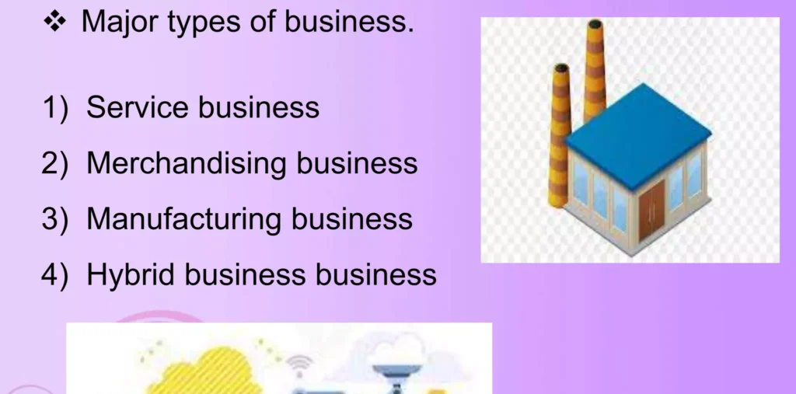
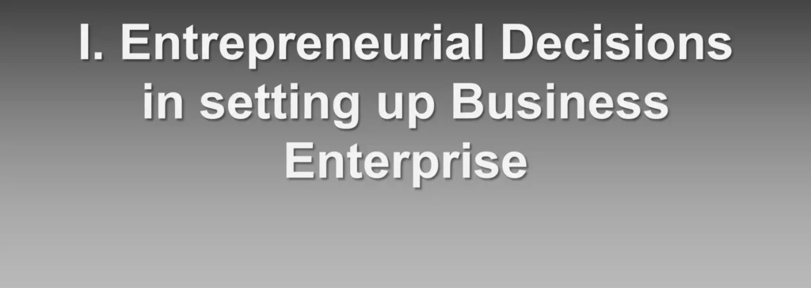
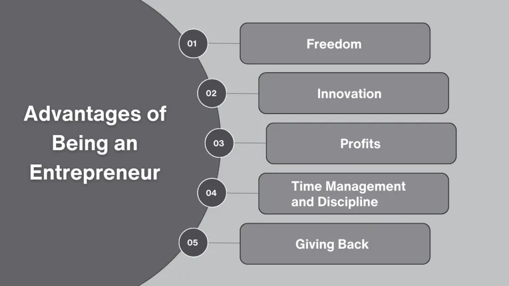
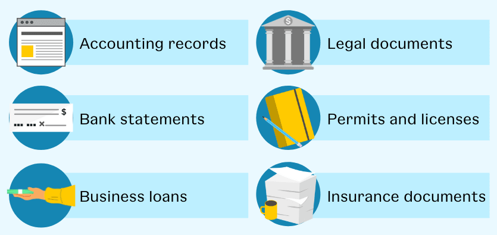
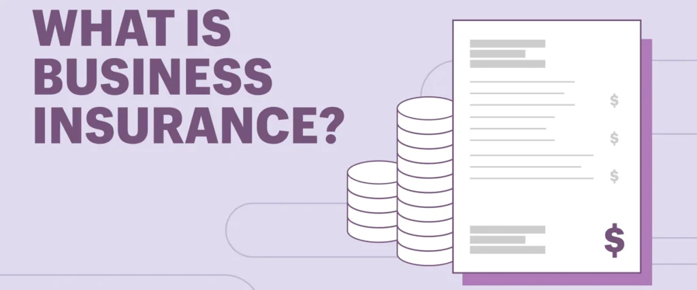

Expanded Nursing Uganda Explanation
Forming and protecting a business should be reviewed through safe maternal and newborn assessment, early recognition of danger signs, respectful communication and timely referral. Connect the definition to vital signs, bleeding, fetal or newborn wellbeing, patient education and local protocol requirements.
Contents, 18 sections (tap to expand)
01 BUSINESS START-UPS
Startup refers to a company in the first stages of operations. Startups are founded by one or more entrepreneurs who want to develop a product or service for which they believe there is demand.
These companies usually start with high costs and limited revenue, which is why they look for capital from a variety of sources such as venture capitalists, crowdfunding, and loans.
02 Advantages and Disa dvantages of Startups
- Advantages Disadvantages
- More opportunities to learn Risk of failure
- Increased responsibility Having to raise capital
- Flexibility High stress
- Workplace benefits Competitive business environment
- Innovation is encouraged Long hours
- Flexible hours
03 WHAT ARE YOUR OPTIONS WHEN YOU BEGIN YOUR BUSINESS?
The entrepreneur here looks at options of how to start a business. There are several ways on how a business can be started as discussed below.
- Starting from scratch ; This calls for starting a business from nowhere to somewhere. This involves starting a business from the ground up. This requires collecting all the factors of production and put them together to have a business started. Most entrepreneurs go this way to start small businesses and they grow them into large businesses.
- Inheriting an existing business ; Some entrepreneurs inherit businesses from their parents or other relatives. This can be a great way to get started in business, as the entrepreneur may already have a customer base and a team of employees in place. For instance the current owner of Madhivan group is a grandson of the first Madhivan who started the business. He inherited business from his father.
- Buying an existing business ; Entrepreneurs can also purchase existing businesses from other owners. For instance someone may be selling out a failed business or with other prospects of changing line of business and someone with money goes ahead and buys the business facility and start his entrepreneurial career from their onwards
- Franchise ; A franchise is a business that is operated under the name and trademarks of another company. The franchisee pays a fee to the franchisor for the right to use the franchisor’s brand, products, and services. This requires the entrepreneur to start a business in the same line with that of the parent company. He may have to get rights from the owner and he runs the business elsewhere. For example the Baroda Bank of Uganda is a franchise of Baroda bank of India
- Business Incubation . This is where existing entrepreneurs, organizations or government agencies provide facilities to help new entrepreneurs get started, trained and provided with operating tools, facilities and land or space. Organizations like Uganda Industrial Research Institute (UIRI), FINAfrica at UMA Logogo, and Global Labs Uganda.
04 Features of a Business:
- Exchange of Goods and Services: All business activities involve the exchange of goods or services for money or its equivalent. This exchange is the core of business transactions.
- Deals in Numerous Transactions : Businesses regularly engage in multiple transactions, not just one or two. This ongoing exchange of goods and services is a defining characteristic of business activity.
- Profit is the Main Objective: Businesses are driven by the profit motive, aiming to generate revenue that exceeds expenses. Profit is the reward for the services provided by the business owner or entrepreneur.
- Business Skills for Economic Success : Running a successful business requires specific skills and qualities. A good businessman or entrepreneur needs experience, knowledge, and the ability to make sound decisions in a dynamic and often uncertain business environment.
- Risks and Uncertainties : Business activities are subject to various risks and uncertainties. Some risks, such as loss due to fire or theft, can be managed through insurance . However, other uncertainties, such as changes in demand or price fluctuations, cannot be insured and must be borne by the business owner.
- Buyer and Seller: Every business transaction involves at least two parties: a buyer and a seller. Business is essentially a contract or agreement between these parties, where goods or services are exchanged for money or other forms of compensation.
- Connected with Production : Business activities can be related to the production of goods or services. When a business is involved in the production of goods, it is referred to as an industrial activity. Industries can be classified as primary (extracting raw materials) or secondary (transforming raw materials into finished goods).
- Marketing and Distribution of Goods : Business activities can also involve the marketing or distribution of goods. This is known as commercial activity. Businesses engaged in marketing and distribution focus on connecting producers with consumers, ensuring that goods reach their intended markets.
- Deals in Goods and Services: Businesses deal in both goods (tangible products) and services (intangible offerings). Consumer goods are those used directly by consumers, while producer goods are used in the production of other goods. Services are intangible but can be exchanged for value, such as transportation, warehousing, and insurance services.
- To Satisfy Human Wants : Businesses aim to satisfy human wants and needs through their products and services. By producing and supplying various commodities, businesses contribute to consumer satisfaction and well-being.
- Social Obligations : Modern businesses recognize their social responsibility and strive to operate in a manner that benefits society as a whole. This includes ethical business practices, environmental sustainability, and contributing to the community.
05 Basics of a Business:
- Business Concept : Every business starts with an idea or concept that addresses a market need or opportunity.
- Market Research : Depending on the business type, extensive market research may be necessary to evaluate the viability of the concept and identify target customers.
- Business Name : Selecting a suitable business name is essential, considering factors such as memorability, relevance to the business, and legal availability.
- Legal Structure : Businesses can choose from various legal structures, such as sole proprietorship, partnership, corporation, or limited liability company (LLC), each with its own advantages and disadvantages.
- Financing : Starting and operating a business requires financing, which can come from personal savings, loans, or investors.
- Operations : Businesses must establish efficient systems and processes for production, distribution, marketing, and customer service.
- Marketing : Businesses need to develop and implement marketing strategies to promote their products or services and attract customers.
- Customer Service : Providing excellent customer service is crucial for building customer loyalty and maintaining a positive reputation.
- Financial Management: Businesses must manage their finances effectively, including revenue, expenses, profits, and cash flow.
- Compliance : Businesses are required to comply with various laws and regulations, such as tax laws, employment laws, and industry-specific regulations.
06 BUYING A NEW BUSINESS
When it comes to business ownership, some entrepreneurs choose to bypass the process of starting from scratch or acquiring a franchise by opting to buy an existing business.
The route to acquiring a business demands thorough due diligence, a process as demanding as creating a business plan for a new venture. This due diligence is important as it uncovers both the strengths and weaknesses of a business; skipping it can lead to unforeseen problems that may doom the business to failure.
07 Advantages of Buying an Existing Business:
- Proven Success : A thriving business with a solid track record offers a higher chance of continued success. It comes with an established customer base, supplier relationships, and operational systems.
- Prime Location : Buying a business ensures you start at the right location, avoiding the risk of second-choice locations that might not attract the same customer traffic.
- Experienced Workforce : Existing businesses come with knowledgeable employees who can guide through the transition and contribute to continuous revenue generation.
- Operational Equipment : The necessary equipment is already in place, and its capacity and condition can be assessed prior to purchase, saving on initial investment costs.
- Inventory and Trade Credit : Successful businesses have already figured out the right balance of inventory and have established trade credit relationships, which new owners can benefit from.
- Immediate Operation: Buying an existing business allows owners to start earning immediately without the delays of setting up a new venture.
- Leveraging Past Owner’s Experience : Even if the previous owner is not present, their records and decisions provide valuable insights for the new owner.
- Easier Financing : It’s often simpler to secure financing for an existing business, especially one with a good relationship with lenders.
- Potential Bargains : Sometimes businesses are sold at a low price due to various reasons, offering a good deal for the discerning buyer.
08 Disadvantages of Buying an Existing Business:
- Risk of a Failing Busines s: Some businesses are on sale because they’re struggling.
- Unsuitable Employees : Inherited staff may not align with the new owner’s vision, necessitating difficult decisions.
- Deteriorating Location : Changes in demographics or competition could render a previously ideal location unsuitable.
- Outdated Equipmen t: Unforeseen costs can arise if the existing equipment or facilities are found to be outdated or inefficient after purchase.
- Resistance to Change : Implementing new policies or innovations can be challenging due to established practices and customer expectations.
- Tangible limitations:
- Design problems : The business’s physical layout, branding, or website may be outdated and require costly renovations or updates.
- Location problems : The business may be located in an inconvenient location, making it difficult for customers to access.
- Merchandise problems : The business may have outdated inventory, that is no longer in demand, limited product selection, or may sell products of poor quality, leading to customer dissatisfaction.
- Intangible limitations:
- Customer or employee ill will : The business may have a negative reputation among customers or employees, making it difficult to attract new business or retain staff, Key employees may leave too.
- Pricing problems: The business may be overpriced, making it difficult to recoup the investment.
- Potentially higher costs to buy: There may be hidden costs associated with the business, such as environmental liabilities or outstanding debts.
- Legal liability in inheriting lawsuits : The business may be facing existing lawsuits that the buyer will inherit.
09 STEPS IN ACQUIRING/BUYING AN EXISTING BUSINESS
Buying an existing business can be risky if approached without following the steps.
1. Self-Assessment: Identifying the Right Business
Begin with introspection. Assess your skills, preferences, and aspirations to pinpoint the type of business that aligns with your strengths and interests. Questions to consider include:
- What business activities captivate or repel you?
- Which industries hold the promise of growth and pique your interest?
- What are your expectations from owning a business?
- Evaluate your readiness in terms of time, energy, financial investment, and risk tolerance. This self-audit lays the groundwork for identifying businesses that not only match your criteria but also promise fulfillment and success.
2. Prepare a list of potential candidates.
Once you know what your goals are for acquiring a business, you can begin your search. Do not limit yourself to only those businesses that are advertised as being “for sale.” The hidden market of companies that might be for sale but are not advertised as such is one of the richest sources of top-quality businesses. Many businesses that can be purchased are not publicly advertised but are available either through the owners or through business brokers and other professionals. Although they maintain a low profile, these hidden businesses represent some of the most attractive purchase targets a prospective buyer may find.
3. Investigate and Evaluate Candidate Businesses and Evaluate the Best One
Patience is key in this phase. Thoroughly investigate each candidate by examining their financial health, market position, competitive landscape, and operational strengths and weaknesses. This helps in shortlisting the most promising businesses. This process also will make the task of valuing the business much easier.
4. Explore Financing Options
The next challenging task in closing a successful deal is financing the purchase. Although financing the purchase of an existing business usually is easier than financing a new one, some traditional lenders shy away from deals involving the purchase of an existing business. Those that are willing to finance business purchases normally lend only a portion of the value of the assets, and buyers often find themselves searching for alternative sources of funds. Fortunately, most business buyers have access to a ready source of financing: the seller, Seller financing often is more flexible, faster, and easier to obtain than loans from traditional lenders.
5. Ensure a Smooth Transition
Once the parties strike a deal, the challenge of making a smooth transition immediately arises. No matter how well planned the sale is, there are always surprises. For instance, the new owner may have ideas for changing the business that cause a great deal of stress and anxiety among employees and the previous owner.
To avoid a bumpy transition, a business buyer should do the following:
- Concentrate on communicating with employees. Business sales are fraught with uncertainty and anxiety, and employees need reassurance.
- Be honest with employees. Avoid telling them only what they want to hear. Share with the employees your vision for the business in the hope of generating a heightened level of motivation and support.
- Listen to employees. They have first-hand knowledge of the business and its strengths and weaknesses and usually can offer valuable suggestions for improving it.
- Consider asking the seller to serve as a consultant until the transition is complete. The previous owner can be a valuable resource, especially to an inexperienced buyer.
10 Evaluating an Existing Business
Buying an existing business can be a great opportunity, giving you an established brand, customers, and immediate income. But finding the right business to buy isn’t easy, it’s a time-consuming, costly, and sometimes frustrating process.
Evaluating a business means assessing and analyzing various areas of a business to determine its value, potential risks, and viability. It involves thoroughly examining factors such as financial performance, market position, operations, assets, liabilities, reputation, and legal compliance.
The purpose of evaluating a business is to gain a clear understanding of its strengths, weaknesses, opportunities, and threats before making a decision to buy or invest in it.
11 Ways of evaluating an existing business before purchase include;
1. Personal Assessment and Criteria: First, consider if the business aligns with your interests, resources, and skills. Evaluate if it’s the right fit for you in terms of cash, credibility, skills, and contacts.
2. Perform due diligence : This involves researching and confirming the details of the business to ensure you are buying what you expect and to assess its value. Create a team of experts including a banker, industry-specific accountant, attorney, and possibly a small business consultant to perform due diligence. During due diligence, focus on five critical areas:
- Owner’s Reason for Selling : Understand the true motive behind the sale.
- Physical Condition : Assess the state of physical assets like equipment and inventory.
- Market Potential : Find out market demand, customer base, and competition to gauge growth opportunities and risks.
- Legal Aspects : Thoroughly vet legal considerations such as collateral, contract assignments, and ongoing liabilities.
- Financial Health : Analyze financial records with an accountant’s help to assess profitability, stability, and develop future projections.
3. Ask for the Business Plan : Does the seller have a business plan? This document (or lack thereof) can reveal a lot about the business’s history, future plans, and the owner’s commitment to selling.
4. Assess the Seller : Your relationship with the seller is important, as you’ll depend on them for information. Pay attention to your interactions during the initial investigation, signs of difficulty now could mean trouble later.
5. Get a picture of operations : Understand how the business operates by assessing its working capital, manufacturing and operations processes, supply chain, and capital expenditures. Ensure that the business is running smoothly and efficiently.
6. Evaluate the assets involved : Determine what assets are included in the transaction and their value. This includes intellectual property, brand names, trademarks, patents, and other important assets. Assess how these assets are protected and their significance to the business.
7. Consider the firm’s reputation: Research the company’s reputation by checking review sites, media outlets, and any past incidents that may have affected its reputation. A strong reputation can positively impact the business’s value.
8. Verify business licenses and permits : Ensure that the business has all the necessary licenses and permits to operate legally. Check if the required permissions are up-to-date to avoid any potential interruptions or fines after the acquisition.
9. Confirm the business’ entity status : If the business is a partnership, corporation or limited liability company (LLC) or joint stock company, review entity documents and related records to ensure the business is registered and in good standing. Verify that the owner has the legal rights to sell the business.
12 Protecting Your Idea
1. Intellectual Property : Business ideas, inventions, logos, and unique product names can be considered intellectual property if recorded in written, audio, or video format.
2. Legal Forms of Protection :
- Patents : Exclusive rights granted for a fixed period to inventors of new and useful products or processes.
- Trademarks : Names or symbols used in trade that are subject to government regulation.
- Copyright : Exclusive rights regulating the use of original creations, including text, video, audio, and multimedia formats.
3. Importance of Secrecy : Be cautious about disclosing your idea to others, especially those you don’t trust.
4. Written Documentation : Place your idea in writing, including a detailed description and sketches if applicable.
5. Registering Patents and Trademarks :
- Patents : File a patent application with the appropriate government agency.
- Trademarks : Register your trademark in the relevant country or region.
6. Applying Copyright : Copyright protection is automatic in most countries and does not require registration. However, adding the copyright symbol (©) to your work is recommended.
7. Notarization : Consider having your written description of your idea notarized for added legal protection. Notarization is the official act of verifying the authenticity of a signature on a document and confirming the identity of the signer.
13 Protecting a business
Protecting a business involves safeguarding its assets, reputation, and future viability from various threats .
This includes ways encompassing legal, financial, operational, and strategic measures.
14 Ways of Protecting a business
1. Legal Protection :
- Intellectual Property Protection : Registering trademarks, patents, copyrights, and trade secrets to protect your unique creations and brand identity. This prevents unauthorized use and provides legal recourse against infringement.
- Contractual Agreements: Developing and enforcing robust contracts with suppliers, customers, and employees to clearly define responsibilities, obligations, and liabilities. This minimizes disputes and protects against breaches.
- Business Structure : Choosing the right legal structure (sole proprietorship, partnership, LLC, corporation) impacts liability and tax obligations. Consult with legal professionals to determine the best structure for your specific business and risk tolerance.
- Insurance : Obtaining comprehensive insurance coverage, including general liability, professional liability (errors and omissions), property insurance, and business interruption insurance, safeguards against financial losses from unforeseen events.
- Compliance : Adhering to all relevant laws and regulations (environmental, labor, consumer protection, etc.) minimizes legal risks and prevents penalties.
2. Financial Protection :
- Diversification : Don’t rely on a single revenue stream or customer. Diversify products/services and customer base to mitigate the impact of market fluctuations or loss of a major client.
- Financial Planning & Budgeting: Developing detailed financial plans and budgets helps track expenses, manage cash flow, and identify potential financial vulnerabilities.
- Credit Management: Implementing effective credit policies and procedures minimizes bad debts and ensures timely payment from customers.
- Fraud Prevention : Establishing robust internal controls and procedures to prevent fraud, embezzlement, and other financial misconduct. Regular audits can also help.
- Emergency Funds : Maintaining sufficient reserves to handle unexpected expenses or economic downturns ensures business continuity during challenging times.
3. Operational Protection :
- Data Security : Protecting sensitive business data (customer information, financial records, intellectual property) from cyberattacks, data breaches, and unauthorized access through strong cybersecurity measures.
- Risk Management: Identifying, assessing, and mitigating potential risks to the business (operational disruptions, supply chain issues, natural disasters, etc.) through proactive planning and contingency measures.
- Physical Security : Protecting physical assets (equipment, inventory, premises) from theft, vandalism, and damage through security systems, access controls, and insurance.
- Disaster Recovery Planning : Developing a comprehensive plan to recover from disruptions caused by natural disasters or other unforeseen events.
- Redundancy & Backup : Implementing backup systems and procedures for critical systems and data to ensure business continuity in case of failure.
4. Strategic Protection :
- Brand Management : Building a strong brand reputation through consistent quality, excellent customer service, and ethical business practices protects against negative publicity and reputational damage.
- Competitive Advantage : Developing and maintaining a competitive advantage through innovation, efficiency, and superior customer service protects against market competition.
- Strategic Partnerships : Collaborating with strategic partners can provide access to resources, expertise, and markets, enhancing the business’s resilience and competitiveness.
- Market Research & Analysis : Continuously monitoring market trends, competitor activities, and customer preferences helps identify potential threats and opportunities.
- Adaptability : Being adaptable and responsive to changes in the market and business environment is crucial for long-term survival.
FRANCHISING
Click here
15 Nursing Uganda Clinical Lens
Use Setting up a Business as a practical nursing topic, not only a memorized definition. Translate theory into safe decisions, accountability, communication and service improvement.
- What to understand first: define setting up a business, identify the normal or expected pattern, then explain what changes when the patient is unwell.
- Why it matters in care: the nurse must recognize risk early, explain findings clearly, document accurately and know when to escalate.
- How to revise it: connect each point to assessment, nursing diagnosis or care problem, intervention, rationale and evaluation.
16 Assessment Guide
- The problem, stakeholders, available resources, policy requirements and ethical issues.
- Risks to patients, staff, confidentiality, quality, costs and continuity.
- Documentation, reporting lines, supervision and evaluation measures.
17 Nursing Priorities, Rationales and Outcomes
- Use evidence, policy and professional standards to guide action.
- Communicate clearly, document decisions and protect confidentiality.
- Evaluate whether the action improves safety, learning or service delivery.
The rationale for these priorities is patient safety: nursing actions should prevent deterioration, reduce discomfort, support recovery and create clear evidence for the next caregiver.
- Expected outcome: The plan is documented, realistic, ethical and improves patient care or learning outcomes.
18 Patient Teaching and Revision Check
- Explain setting up a business in simple language the patient or caregiver can repeat back.
- Teach warning signs, medicine or follow-up instructions, hygiene or lifestyle points where relevant.
- For exams, prepare a short answer using: definition, causes or risk factors, signs, assessment, management, complications and prevention.
- For ward practice, document baseline findings, actions taken, patient response and the plan for review.
Illustrations and Diagrams (8)





Related Video Lectures
Watch nursing lecture videos on YouTube for this topic. Opens in a new tab.
Watch on YouTubeExternal link: YouTube may use its own cookies and terms. Nursing Uganda is not affiliated with YouTube.